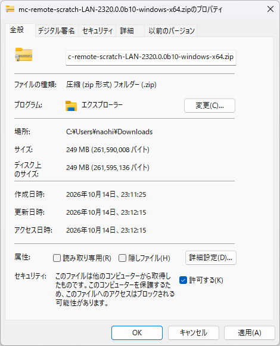

マイクラリモコン ／ 自分のワールドで使う ／ Scratch LANパッケージ
🐱 Scratch LANパッケージ
箱庭サーバーで体験したScratchを、自分のPCや、家庭・教室のネットワーク（LAN）で動くマイクラサーバーで使うためのパッケージです。改造版Scratchと、マイクラとの橋渡し、通信を見るWireScopeが一つのZIPに入っていて、ダウンロードして展開すれば動きます。1台のPCですべて動かすこともできます。
版：2321.0.0rc1（リリース候補版、2026年10月19日公開）。手順を覚えておく必要はありません。次に使うときも、このページを見ながら進めてください。
🚀 はじめて使う
0. 用意するもの
- McRemoteを入れたマイクラサーバーが動いていて、マイクラアプリでそのワールドに参加していること。サーバーの準備はMcRemoteのREADMEで案内しています。
- Scratchを使うPC（Windows 11、Apple SiliconのMac、Linuxのどれか）と、Chromeなどのブラウザ。
1. 自分のOSのZIPを一つダウンロードする

【重要】Windowsでは、ZIPを展開する前に、エクスプローラーでZIPを右クリックし、「プロパティ」→「全般」の「許可する」にチェックして「適用」を押します。その後で展開すると、起動ファイルをダブルクリックで起動できます（Smart App ControlをオンにしたWindows 11で確認済み）。
ZIPは約250MBです。ファイルの一覧と、自分で照合したい人向けのSHA-256はリリースページにあります。
2. 展開して、使い続ける場所へ置く
展開してできたフォルダーの内側にあるmc-remote-scratch-LANフォルダーを、自分のホームフォルダーのmc-remoteフォルダーへコピーします（無ければ作ります）。ダウンロードフォルダーに置いたままでも動きますが、マイクラリモコンの標準の置き場所に収めておきましょう。解説に沿って作業するときに迷いや間違いが少なくなり、各言語の作品の置き場所の基準にもなります。
ホームフォルダー/mc-remote/
└─ mc-remote-scratch-LAN/
└─ 2321.0.0rc1/
├─ start-mc-remote.cmd（Macは .command、Linuxは .sh）
├─ はじめに.html
├─ README_ja.md
└─ data/- ホームフォルダーは、Windowsなら
C:\Users\（名前）、Macなら/Users/（名前）、Linuxなら/home/（名前）です。 - 展開のしかたによっては、外側に同じ名前のフォルダーが一段増えます。目印は「起動ファイルと
dataフォルダーが並んでいる場所」です。 - 次に使うときのために、このフォルダーをお気に入りに入れるか、起動ファイルのショートカット（エイリアス）を作っておくと便利です。
はじめに.htmlはブラウザで読める案内で、このページが開けないときも使えます。
3. 起動する
| OS | 起動のしかた | 初回だけ |
|---|---|---|
| Windows | start-mc-remote.cmdをダブルクリック | 展開の前に「許可する」にしておく（1.を参照） |
| Mac | start-mc-remote.commandをダブルクリック | 警告の窓が出たら閉じ、「システム設定」→「プライバシーとセキュリティ」の「このまま開く」を押す。確認の窓でもう一度「このまま開く」を押し、管理者のパスワードを入れる。2回目からは出ません |
| Linux | start-mc-remote.shを右クリックして「プログラムとして実行」 | ダブルクリックではテキストエディターが開くことがあります |
ターミナルに慣れている人は、フォルダーでターミナルを開いて./start-mc-remote.cmd（Windows。Git BashかPowerShell）、./start-mc-remote.command（Mac）、./start-mc-remote.sh（Linux）でも起動できます。
起動すると、ターミナル（黒い画面）が開きます。Scratchを使っている間は閉じないでください。閉じるとScratchがマイクラにつながらなくなります。終わるときに閉じます。
4. 設定画面で接続先を決める
起動すると、ブラウザに設定画面が開きます。「マイクラサーバーは、どのPCで動いていますか？」から選んで保存し、「改造版のScratchを開く」を押します。
| このPC | LAN内の別のPC | |
|---|---|---|
| どんなとき | マイクラサーバーもScratchも、同じPCで動かす | マイクラサーバー役のPCが別にある。Scratchを使う各PCで、このパッケージを動かす |
| 接続先 | 127.0.0.1 | マイクラサーバー役のPCのIPアドレスかホスト名 |
| マイクラリモコンのポート | 通常25575。マイクラアプリで参加するときのポート（25565）とは別です | |
保存した後は、設定画面を閉じてもScratchを使い続けられます。次回からは、保存した接続先でScratchが開きます。
5. 接続して、ペアリングする
ここからは箱庭サーバーと同じです。Scratchで「接続する」ブロックを実行すると、WireScope miniに/mcremote pair NNN-NNNというペアリングコマンドが出ます。マイクラのチャットに貼り付けてEnterを押すと、ペアリングが完了します。コマンドの先頭にスペースがあると無効なので注意してください。
ペアリングは約2時間有効です。切れたら、もう一度「接続する」からペアリングします。
🔁 前に使った続きを開く
- マイクラサーバーが動いているのを確かめて、マイクラアプリで参加する。
- いつもの起動ファイル（またはショートカット）を開く。ブラウザのブックマークだけでは、Scratchはマイクラにつながりません。
- 保存した接続先でScratchが開くので、作品を開いて「接続する」。時間が空いたときは、ペアリングし直します。
作品の保存
- 作品は、まずブラウザに保存されます。同じPCの同じブラウザなら、次に開いたときに続きから始められます。
- 別のブラウザや別のPCには、自動では現れません。大切な作品は、Scratchの「ファイル」→「コンピューターに保存する」でファイル（
.sb3）にも保存しておきましょう。 .sb3は、ダブルクリックでは開きません。Scratchの「ファイル」→「コンピューターから読み込む」で開くか、開いているScratchの画面へドラッグ＆ドロップします。読み込む前に、今の作品はブラウザへ保存されます。
新しい版にする
- 新しい版のZIPを取って展開し、
mc-remote-scratch-LANの中に、今の版と並べて置く（上書きしない）。 - 今の版のターミナルを閉じてから、新しい版を起動して確かめる。今の版が動いたままだと、新しい版は起動できません。
- 接続先は版のフォルダーの
settings.jsonに保存されるので、新しい版では接続先をもう一度保存する。 - ショートカットなど、いつもの入口を新しい版に変える。前の版は、しばらく残しておく。
Scratchのアドレス（127.0.0.1:8601）は版が変わっても同じなので、ブラウザに保存した作品はそのまま開けます。
🔍 仕組みを知る
マイクラリモコンは、二つのことでできています。マイクラアプリでワールドに参加すること、そしてブラウザのScratchからそのワールドを操作することです。このパッケージは、Scratchの側をあなたのPCで動かします。
「このPC」の構成では、二つのPCが同じ1台になります。
- ZIPの中身：改造版Scratch、ScratchとMcRemoteの間をつなぐBridge、通信を見るWireScope、それらを動かすNode.js、起動と設定のためのランチャー。
- 外へは公開しません：Scratch（
8601）、Bridge（8602）、WireScope（8603）は、どれもこのPCの中（127.0.0.1）だけで待ち受けます。外へつなぐのは、マイクラサーバーのMcRemoteへの接続だけです。 - 初回の確認：このパッケージはコード署名と公証をしていないので、OSが初回に確認を求めます。上の手順のとおりに進めてください。
- ソースコード：scratch-editorのリポジトリで公開しています。
🧰 うまくいかないとき
- 起動してもすぐ終わる：前に起動したターミナル（前の版のものも）が残っていないか確かめて、閉じてからもう一度起動します。
- 「接続する」でエラーになる：マイクラサーバーが動いているか、設定画面の接続先とポート（
25575。25565ではない）が合っているかを確かめます。 - LAN内の別のPCのサーバーにつながらない：サーバー役のPCのファイアウォールで、
25565と25575への接続を許可します。 - ペアリングが通らない：コマンドの先頭にスペースが無いか確かめます。時間が経ってコードが切れたときは、もう一度「接続する」から始めます。
それでも困ったら、Discordで聞いてください。この版はリリース候補版なので、不具合があるかもしれません。不具合や気づいたことは、フィードバックのフォームから送ってください。